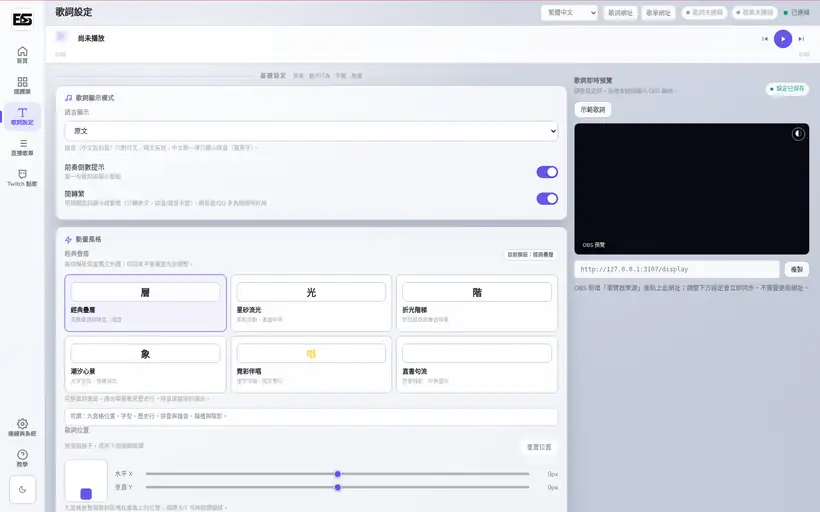
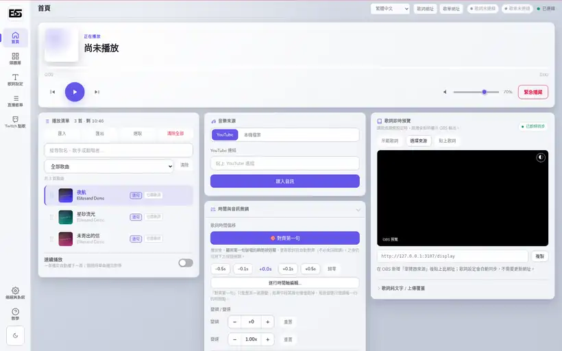
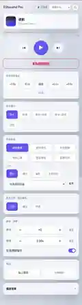
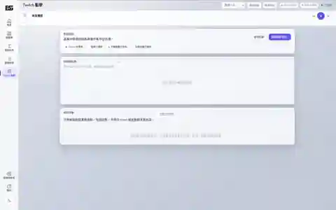

01
歌詞搜尋、校時與演出模板
自動搜尋多個歌詞來源，支援逐字、逐句、LRC、KRC、TTML、SRT 與純文字。每種動畫模板都能獨立保存字體、位置、色彩與動態設定。
- 六種 OBS 歌詞演出模板
- 首句對齊與逐行時間軸編輯
- 日韓羅馬拼音、中文拼音與簡繁轉換

● 最新穩定版 v0.9.7
為 VTuber、歌回實況主與直播演出者設計的 Windows 本機工具。匯入歌曲、同步歌詞、控制 OBS 動畫與管理 Twitch 點歌，不必在多個程式之間來回切換。


一套工具，完成整場歌回
從開台前準備、直播中的歌曲控制，到收播後整理章節時間戳，Elitesand Pro 把容易分散的工作集中在一致的操作流程中。
自動搜尋多個歌詞來源，支援逐字、逐句、LRC、KRC、TTML、SRT 與純文字。每種動畫模板都能獨立保存字體、位置、色彩與動態設定。

複製固定網址到 OBS Browser Source，之後切換模板、主題與版面都會即時同步。直播歌單能顯示已唱、正在唱與接下來。


聊天室與忠誠點數點歌會先進入待確認區，由主播決定是否下載。支援限制、逾時、拒絕、重試、退款與自訂回覆。

三步開始直播
先讓 Elitesand Pro 管理歌曲與歌詞，再把兩個固定網址加入 OBS。
貼上 YouTube 連結或拖入本機音檔。
自動選擇來源，必要時調整時間軸。
複製歌詞與歌單網址到 Browser Source。
實際使用畫面
畫面由 Portable 版本在隔離測試環境中啟動並截取，示範資料僅供展示。
v0.9.7 穩定驗證期
接下來兩週原則上不加入一般功能，只處理必要的重大問題。完成實際直播驗證後，預計發布 v1.0.0。
查看 GitHub 開發狀態 →Windows 下載
Portable 已包含 Node.js、yt-dlp 與 FFmpeg。安裝包尚未商業簽章，請從官方 GitHub 下載並核對 SHA-256。
常見問題
可免費用於個人與商業直播／演出，詳細授權以 GitHub 文件為準。
可以，Installer 與 Portable 發布包已包含執行所需元件。
繁體中文、English、日本語、한국어、简体中文。